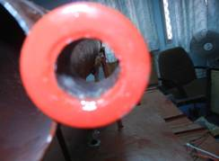
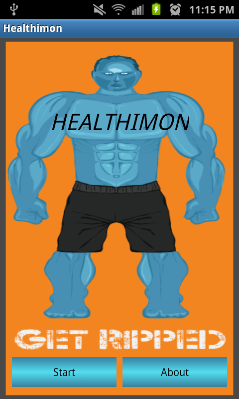
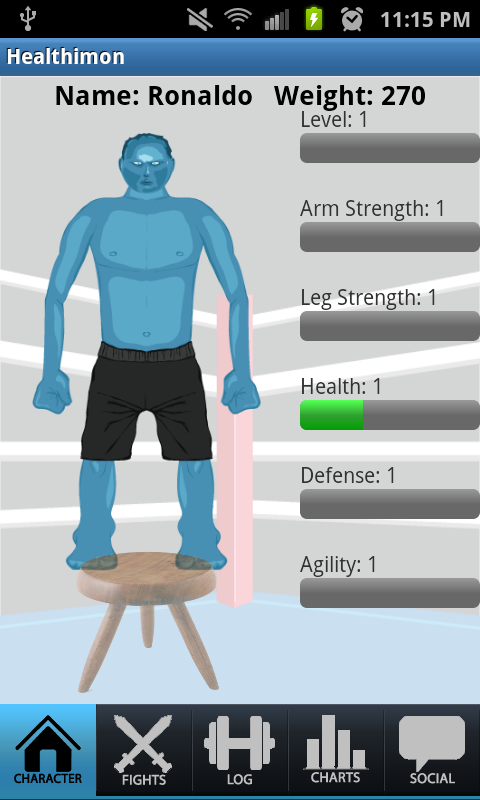
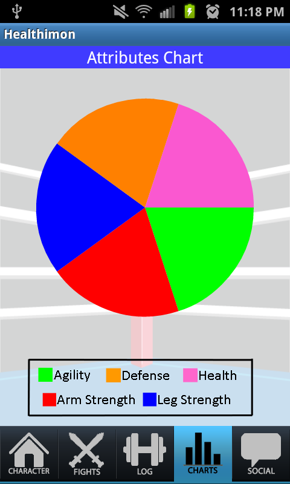
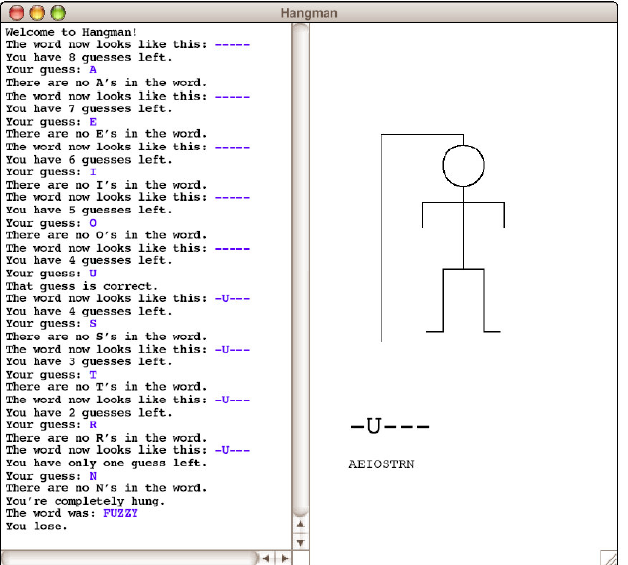
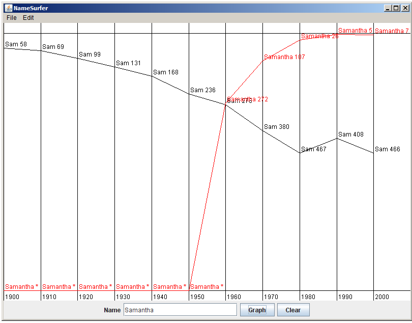
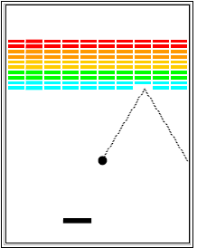
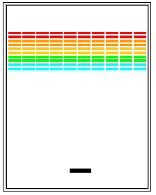

Writing a software code to track the centroid of the dummy object using Digital Image Processing and Centroid Detection
The Centroid Detection Code

Figure:The Red circular holes
The aim of the centroid detection in the code was to successfully detect the circles and their centroids .This was achieved by painting the body of the circle red and then thresholding the image for red color only .The centeroid of this thresholded image was then found out.Through this commands for motor movements were sent to the controller via serial communication
Contact me for more details.
Heathimon is a combination fitness and casual gaming app which makes recording daily food and exercise more fun. It is designed to give users motivation to daily enter their exercise and food intake.
Screenshots

Role Software Design ,Software code (Java) for backend and Algorithm design.
For more details.GitHub Repository
Entire Hangman Game Development alongwith creating the UI using swing. Created a Hangman Game in Java using acm libraries.Work included parsing entire dictonary for words,creating UI for users and proper string manipulation and backend game logic development.
Screenshots

For more details.GitHub Repository
Entire Project development alongwith creating the UI using swing and graph display. Created a Name Search project in Java using acm libraries.Included parsing large file of data of names and records of their ranks.Creating Hash Maps of the data and then fetching and displaying the data in the form of a graph when called upon by the user in the UI.

For more details.GitHub Repository
Entire Project development alongwith creating the UI using swing and game logic development. Created a Breakout Game in Java using acm libraries.

For more details.GitHub Repository
Made a Java application for keeping record of a Library database using OOP, Servlets ,SQL ,Java Net Beans.Included parsing a large file of data for setting up database. Creating search queries on user Input and displaying the fetched results .
For more details.GitHub Repository
Team Members: Danish Shaikh, Nicholas Fonda
Implemented a preemptive kernel that met hard deadlines while reading sensors and message passing. We where using Texas Instruments’ Stellaris Evalbot, Part # EKB-UCOS3-EVM, Programing in C using the MicroOSIII architecture and IAR toolset. My partner and I worked well together and complemented each others skills.
Requirement gathering, Analyses, Design, Code and Test Application design for controlling industrial appliances through PC using serial communication.